Lune blog
Articles on transaction enrichment, digital banking and Lune news.
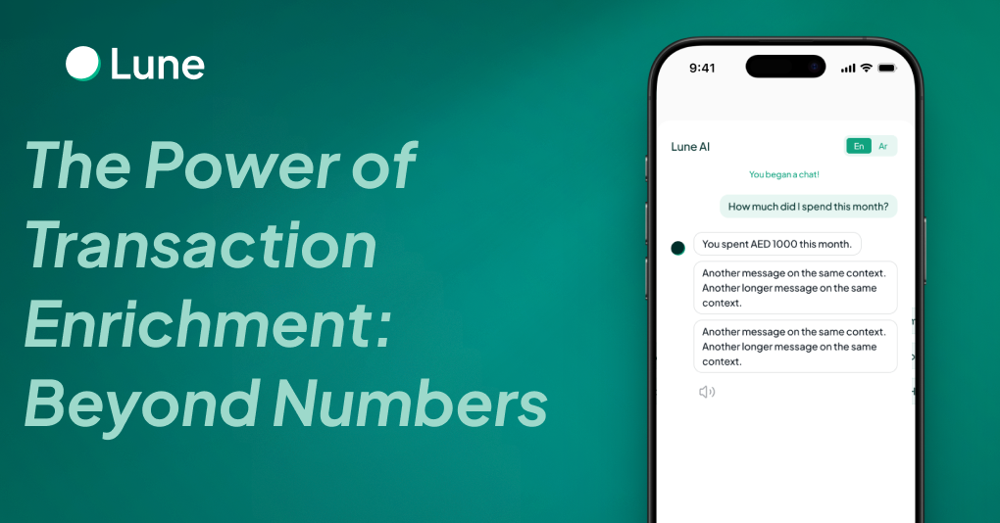
21 May 2026The Power of Transaction Enrichment: Beyond NumbersIf you are going to talk to your bank like a person, the data behind it needs to act like it understands you. Enriched transactions make that possible. That is when the Lune AI Financial Assistant actually feels helpful instead of robotic. 27 November 2025Smart Nudges: How AI Can Boost Customer Engagement in BankingCustomers ignore generic notifications. Banks need smart nudges, AI-driven, personalised prompts that guide financial behaviour at the right moment. By leveraging enriched transaction data, banks can increase app engagement, savings, and customer loyalty, without being intrusive. Lune make this possible by turning every transaction into actionable insights.
27 November 2025Smart Nudges: How AI Can Boost Customer Engagement in BankingCustomers ignore generic notifications. Banks need smart nudges, AI-driven, personalised prompts that guide financial behaviour at the right moment. By leveraging enriched transaction data, banks can increase app engagement, savings, and customer loyalty, without being intrusive. Lune make this possible by turning every transaction into actionable insights. 20 November 2025Meet the Future of Banking: The Lune AI Financial AssistantLune is redefining conversational banking with an AI assistant that answers real financial questions instantly, powered by verified data, not guesses.
20 November 2025Meet the Future of Banking: The Lune AI Financial AssistantLune is redefining conversational banking with an AI assistant that answers real financial questions instantly, powered by verified data, not guesses. 22 July 2025Powering the Nation’s Ambition: Lune x Commercial Bank of DubaiLune is proud to partner with Commercial Bank of Dubai (CBD) to enhance the personal banking experience through smarter, clearer financial insights.
22 July 2025Powering the Nation’s Ambition: Lune x Commercial Bank of DubaiLune is proud to partner with Commercial Bank of Dubai (CBD) to enhance the personal banking experience through smarter, clearer financial insights. 6 May 2025Why Financial Data Enrichment is Important in BankingLearn about data enrichment, financial data enrichment and understand why it holds value when it comes to banking and finances.
6 May 2025Why Financial Data Enrichment is Important in BankingLearn about data enrichment, financial data enrichment and understand why it holds value when it comes to banking and finances. 6 May 2025What is Data Enrichment? - A Comprehensive GuideLearn what data enrichment is, why it matters, and how you can implement it today.
6 May 2025What is Data Enrichment? - A Comprehensive GuideLearn what data enrichment is, why it matters, and how you can implement it today. 1 May 2025Unlocking Financial Inclusion for UAE's Underserved PopulationWe're excited to announce that Lune Technologies has teamed up with the National Bank of Fujairah (NBF).
1 May 2025Unlocking Financial Inclusion for UAE's Underserved PopulationWe're excited to announce that Lune Technologies has teamed up with the National Bank of Fujairah (NBF). 1 May 2025Top 5 Mobile Banking App Features that Consumers Look for in 2024Mobile banking is continually evolving to meet the expectations of a tech-savvy generation. In 2024, banking apps are transforming into comprehensive platforms that combine daily financial management with user-friendly design and intelligent features.
1 May 2025Top 5 Mobile Banking App Features that Consumers Look for in 2024Mobile banking is continually evolving to meet the expectations of a tech-savvy generation. In 2024, banking apps are transforming into comprehensive platforms that combine daily financial management with user-friendly design and intelligent features. 1 May 2025The future of data categorization: exploring the possibilities with advanced machine learning techniquesWith the way information keeps growing in size and complexity today, it is no longer possible to rely on the traditional and conventional ways of data categorization.1 May 2025The financial industry's carbon footprint: How to lead the charge toward a greener financial sector?In the last few years, there has been a lot of talk about the financial sector's carbon footprint.
1 May 2025The future of data categorization: exploring the possibilities with advanced machine learning techniquesWith the way information keeps growing in size and complexity today, it is no longer possible to rely on the traditional and conventional ways of data categorization.1 May 2025The financial industry's carbon footprint: How to lead the charge toward a greener financial sector?In the last few years, there has been a lot of talk about the financial sector's carbon footprint.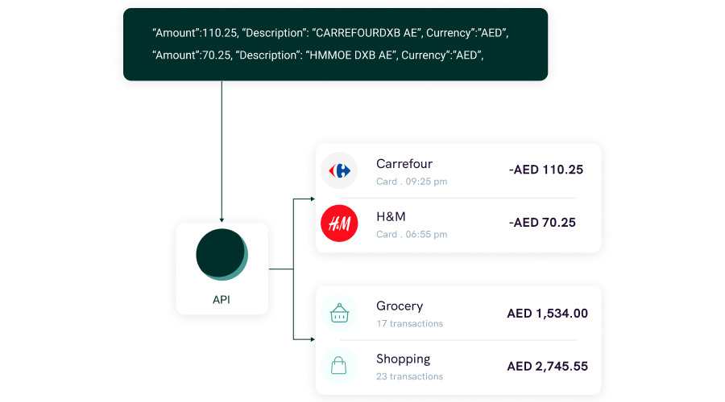
1 May 2025The Shifting Sands of MENA Financial ServicesIn this blog post, we highlight the evolution of the MENA Financial Services ecosystem and the challenge of unstructured financial transaction data.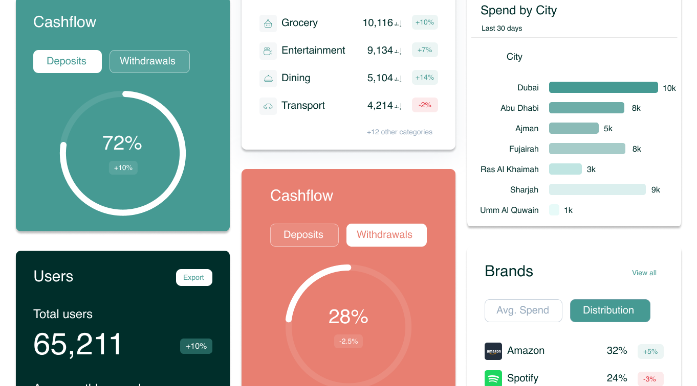
1 May 2025The Lune Story - from Building for One to Building for AllLune started out of frustration, frustration that when looking at our banking apps we couldn’t understand where our money was going.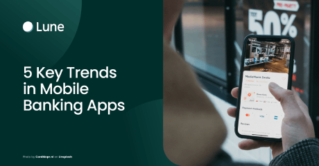
1 May 2025The Future of Mobile Banking Apps: 5 Key Trends to Watch in 2023Banking has come a long way from what it used to be,in recent years, digital banking apps have completely transformed the way people manage their money, giving them a better understanding of where their money is going.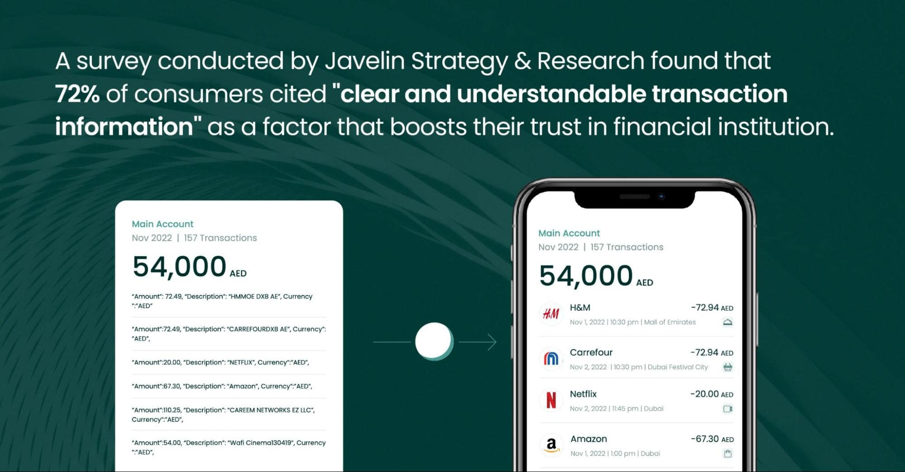
1 May 2025Strengthening Customer Relations with Transparent Banking DataFinancial institutions have come a long way in offering digital platforms to make banking more convenient for users.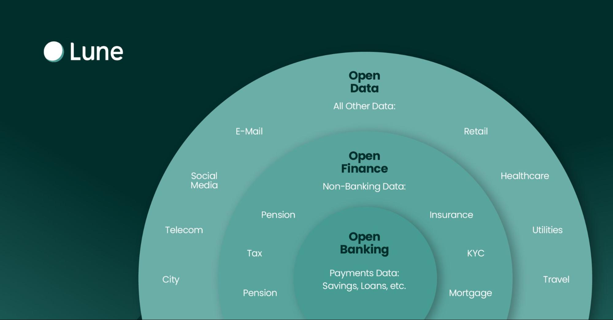
1 May 2025Open Finance in MENA: Game-Changing New Opportunities For Banks & FintechsOpen finance and open banking, two buzzwords we often hear in the financial world.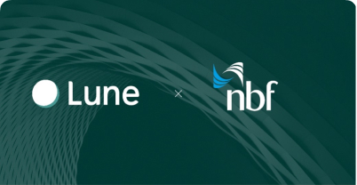
1 May 2025NBF Unlocks Customer Spending Habits With LuneWe're excited to announce that Lune Technologies has teamed up with the National Bank of Fujairah (NBF). 1 May 2025Lune's Commitment to Privacy-focused Financial Data Enrichment for BanksIn the age of digital banking, safeguarding customer data is crucial. Integrating third-party financial services can be a double-edged sword, offering benefits but also raising privacy and security concerns.
1 May 2025Lune's Commitment to Privacy-focused Financial Data Enrichment for BanksIn the age of digital banking, safeguarding customer data is crucial. Integrating third-party financial services can be a double-edged sword, offering benefits but also raising privacy and security concerns. 1 May 2025Lune and Fintech Galaxy Team Up for Open Finance InnovationWe're excited to bring you some thrilling news - Lune and Fintech Galaxy have entered into a Memorandum of Understanding.1 May 2025Lune Wins 'Best Tech Solution for Banking' at Entrepreneur Awards 2023We're thrilled to share some exciting news! Lune Technologies has just won the 'Best Tech Solution for Banking' award at the Entrepreneur Tech Innovation Awards 2023.
1 May 2025Lune and Fintech Galaxy Team Up for Open Finance InnovationWe're excited to bring you some thrilling news - Lune and Fintech Galaxy have entered into a Memorandum of Understanding.1 May 2025Lune Wins 'Best Tech Solution for Banking' at Entrepreneur Awards 2023We're thrilled to share some exciting news! Lune Technologies has just won the 'Best Tech Solution for Banking' award at the Entrepreneur Tech Innovation Awards 2023.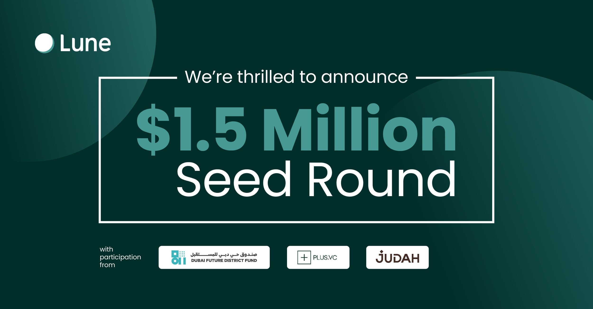
1 May 2025Lune Secures $1.5 Million Seed FundingWe're thrilled to announce that Lune Technologies has closed a $1.5 million seed funding round, marking a new chapter in our journey to redefine financial data analytics in the MENA region.1 May 2025Lune Ranks in Future 100's Most Innovative Companies of 2023In a remarkable milestone for Lune, we’re proud to announce that we’ve been selected as a Future 100 company by the UAE Ministry of Economy and the Government Development & the Future Office for 2023.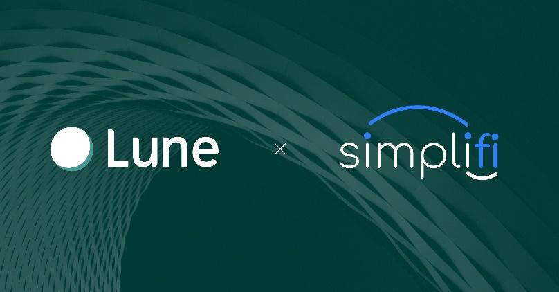
1 May 2025Lune Partners with SimpliFiWe are thrilled to announce our strategic partnership with SimpliFi, a leading Cards as a Service (CaaS) platform in MENA and Pakistan. With insight-driven businesses projected to grow by 30% annually, our alliance is designed to tap into this trend and drive transformative data analytics and enrichment services for businesses throughout the region.1 May 2025Lune Attains ISO 27001 CertificationWe're excited to announce another achievementfor Lune, we're officially ISO 27001 certified!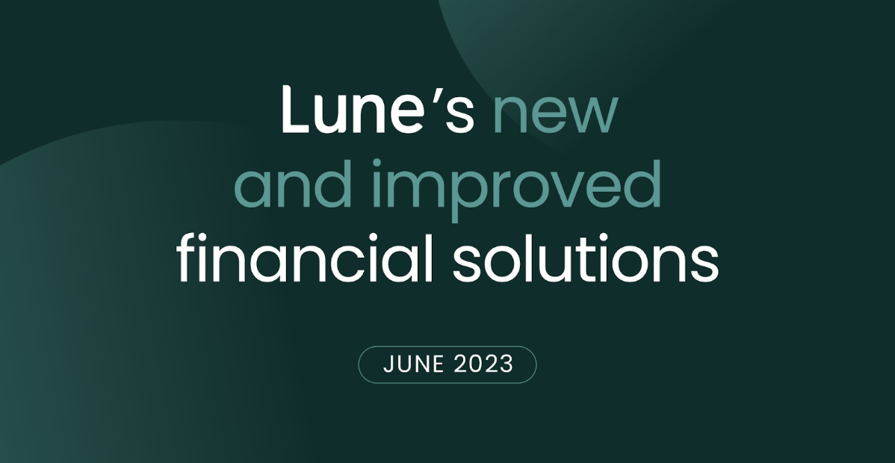
1 May 2025June 2023 Product UpdatesUnveiling Lune's newest product enhancements, set to transform the financial data experience for institutions and customers. Check out our fresh bank statement parsing, feedback loop, and transactions update webhook features 1 May 2025Innovation in Banking: 5 Digital Growth Strategies to Embrace in 2023In this rapidly changing digital landscape, it's about time for banks and financial institutions to adapt and innovate in the industry.
1 May 2025Innovation in Banking: 5 Digital Growth Strategies to Embrace in 2023In this rapidly changing digital landscape, it's about time for banks and financial institutions to adapt and innovate in the industry. 1 May 2025How we design fintech solutions at Lune: Our PhilosophyAlexandre Soued, Co-founder of Lune, talks about the work that goes into designing the leading transaction enrichment API in the Middle East
1 May 2025How we design fintech solutions at Lune: Our PhilosophyAlexandre Soued, Co-founder of Lune, talks about the work that goes into designing the leading transaction enrichment API in the Middle East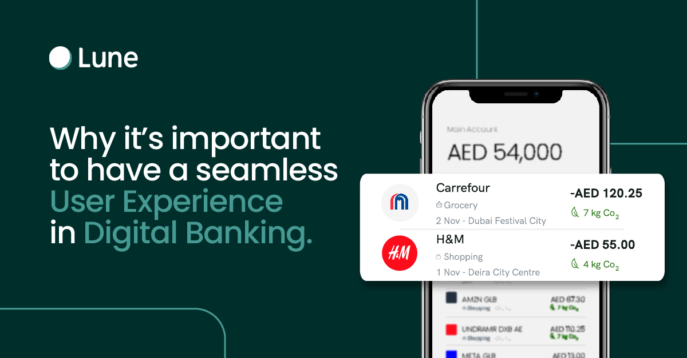
1 May 2025How UX is shaping the future of digital banking and why it's no longer an option not to have oneIf you're looking to make your bank more in tune with the users of today and tomorrow, it's time to reassess how you're serving them.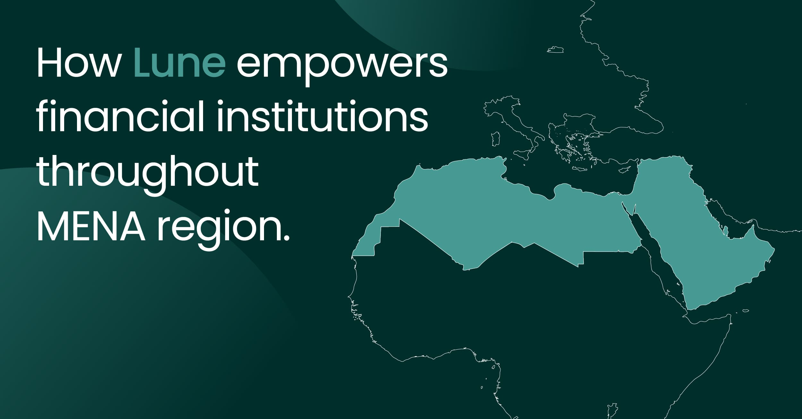
1 May 2025How Lune's Enrichment Engine Empowers MENA’s Financial Institutions with Local Merchant IdentificationAs the financial landscape in the MENA region keeps progressing, both financial institutions and their users demand more accurate, efficient, and relevant sources of transactional data. 1 May 2025Helal Lootah Talks Fintech with Kris FadeIn a recent episode of "Destination AbuDhabi," Kris Fade welcomed Helal Tariq Lootah, Lune's co-founder andco-CEO, for a meaningful conversation.1 May 2025COP 28 and the Finance Sector: How Banks and Fintechs Can Drive Climate ActionWe're excited to bring you some thrilling news - Lune and Fintech Galaxy have entered into a Memorandum of Understanding.
1 May 2025Helal Lootah Talks Fintech with Kris FadeIn a recent episode of "Destination AbuDhabi," Kris Fade welcomed Helal Tariq Lootah, Lune's co-founder andco-CEO, for a meaningful conversation.1 May 2025COP 28 and the Finance Sector: How Banks and Fintechs Can Drive Climate ActionWe're excited to bring you some thrilling news - Lune and Fintech Galaxy have entered into a Memorandum of Understanding.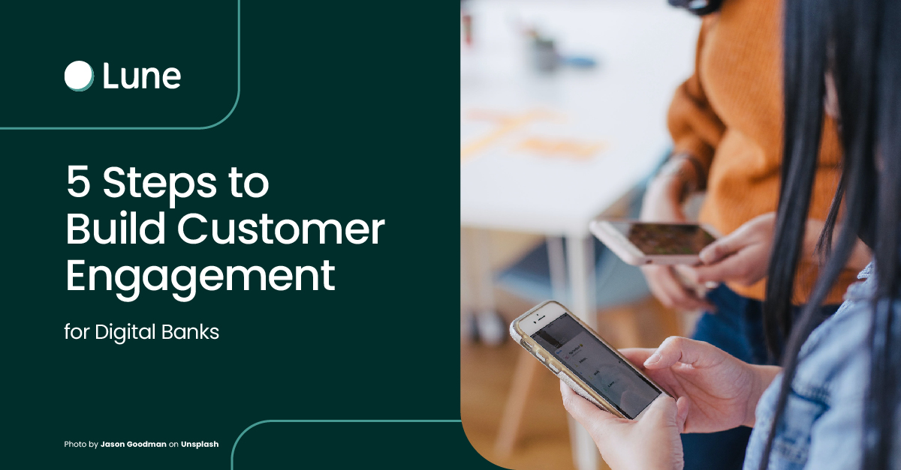
1 May 20255 Digital Banking Strategies to Increase Customer Engagement In 2023In today's world, customer expectations and behaviors are far beyond the scope of a single touchpoint. This trend is exploding as disruptive industry changes have given rise to new digital brand experiences.See what your card transactions can earn.
Contact sales for a live demo. We show Lune on sample data, then on a sample of your own transactions.